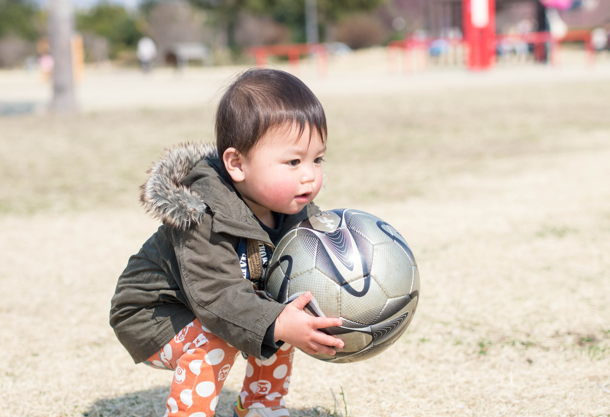
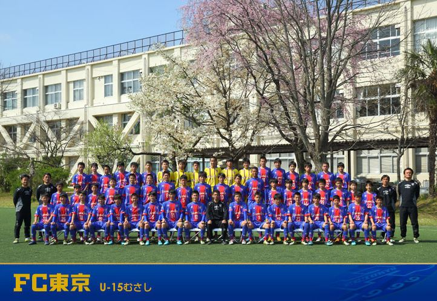
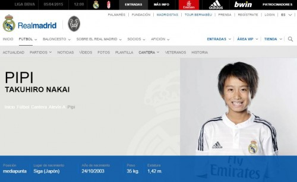
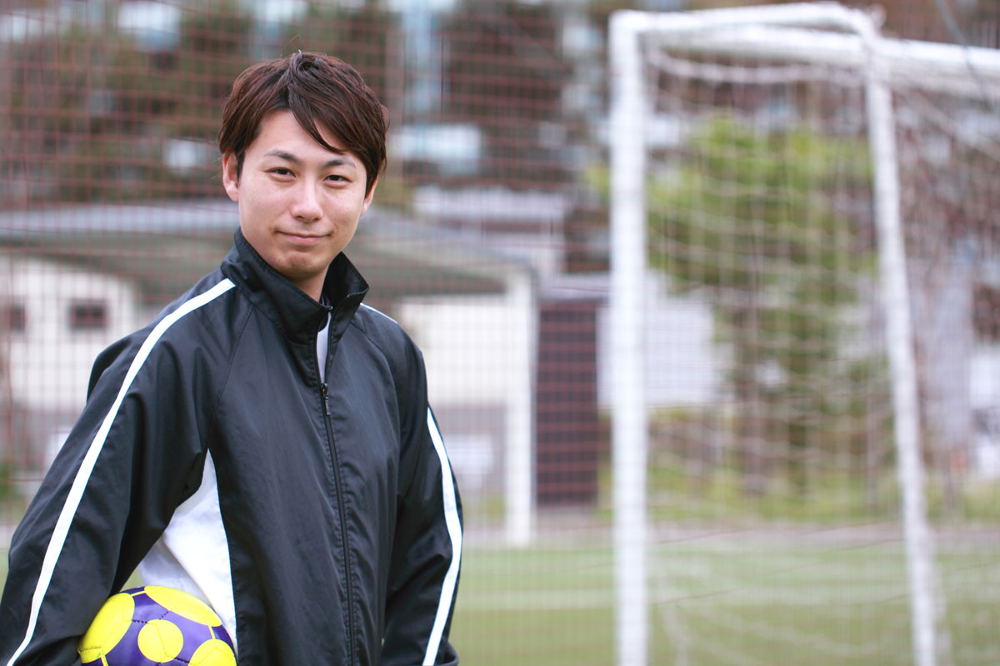

チームを探す近くのサッカーチームを探してみよう！
県別に探す
記事を読むチームが発信するサッカー情報をチェックしよう！
PICK UP COLUMN編集部がピックアップした注目のコラム»一覧へ
-

シュート塾 1，2年生【FC千代田：岡田 悠貴】
自然と体重を乗せた強いシュートを打つために…。強さとコントロールは、別物ではない…。 ≪練習内容≫ ・リフティング ・ポイント式リフティングシュート（バーあて、ポストあて） ・全力ダッシュでスーパーシュート（自分で投げる版）
»続きを読む -

悠貴のドリブル塾】身体を自由自在に動かせるようになる。身体を動かうところに自然とボールがついてくると同時に頭も自由に動かせるようにする。
練習内容
»続きを読む
・コーンドリブル
・技術
・世界の一対一
・ゲーム
まずは、身体が動くようにスピード意識のコーンドリブル。縦には早くなってきたが横、後ろがまだまだ課題。コーンの位置をずらし横、後ろを意識させる。また競争力を生み出すためにレースを展開。最近少しずつ良くなってきたがまだレースの時に一番力を発揮する選手が多くいる。
-

【FC千代田：岡田 悠貴のベンジャミン塾】とにかく身体を動かす、色々な動きができるようにする。サッカーの楽しさを知る。
≪練習内容≫ ・擬似鬼ごっこ ・ドリブルシュート ・ゲーム とにかくいろいろな動きを取り入れて、色々な動きができるようにすることを意識。鬼ごっこでは、氷鬼をベースに捕まった
»続きを読む
HOT PLAY MOVIE注目の動画を紹介！»一覧へ
-
まだまだ発展途上。目指せメッシ【FC千代田練習シーン：ボールコントロール編】
基礎的な練習ですが、リズムやバランスを学ぶ上で重要な取り組みです。今はまだおぼつかない感じではありますが、これを何度も練習していくうちに、驚くほど見事なボールコントロールができるようになります。
»記事を読む
NEWS選りすぐりのサッカー最新情報をお届け！»一覧へ
-

海外で活躍する日本の星！久保建英くんがバルセロナから放出されたワケ
事の発端はバルセロナの不正行為です。バルセロナは、スペイン外の未成年選手登録において、違反行為を行っていたと国際サッカー連盟（ＦＩＦＡ）から指摘をされていました。
»続きを読む -

レアルの下部組織に在籍する天才・中井卓大くんのまとめ
中井卓大くんが最初に日本で注目を浴びたのは、2013年10月に放送されたテレビ朝日で放送された「やべっちFC」で紹介された時です。当時は、レアル・マドリードの下部組織に初めて日本人が入団したとのことで、それをきっかけにやべっちFCで紹介されました。
»続きを読む -
8人制サッカー移行により生まれたメリット・デメリット
少年少女サッカー選手をお子様に持つ親御様であればご存知とは思いますが、2011年より全日本少年サッカー大会は8人制サッカーが導入されました。
»続きを読む -

日本における不思議なサッカー人気
1993年にJリーグが開幕した当初、サッカー人気は爆発的に向上しました。サッカーに興味が無かった人が、Jリーグ開幕をきっかけに興味を持った人も多かったのではないでしょうか。
»続きを読む
FAQよくある質問をまとめました»一覧へ
-

幼少期にサッカーやフットサルをやりすぎると、筋肉が付いて成長が遅くなるって本当ですか？（親30代・女、子供5歳・男）
代表的な迷信の一つと言えると思います。昔は筋肉が付くことで、骨の成長を阻害すると思われていました。これは、完全なる誤解なのですが、それが全国的に広まってしまったということでしょう。
»続きを読む -

サッカーかフットサルをやらせようと思うのですが、どんな指導者を選べば良いのか悩んでいます。（親30代・男、子供10歳）
サッカーやフットサルの指導者選びは簡単ではありません。これは、サッカーやフットサルに限った話ではありません。例えば、学校や塾の先生であっても、自分に合った人を選びたいと考えた時、そもそも選ぶ権利が無かっ
»続きを読む -
子供が所属しているチームがカウンターサッカーなのですが、ポゼッションサッカーが流行っているのにこのチームでいいのかなと悩んでいます。（親30代・女、子供10歳）
こういったご質問はよく頂きます。最近は、保護者の方もサッカーに関する知識をお持ちなので、チームの戦術を気にされるケースが増えてきているようです。カウンターサッカーorポゼッションサッカーもその一例と言えます。
»続きを読む -

コーチに怒られている子供が不憫でなりません。怒らないコーチを探すべきでしょうか。（親40代・女、子供12歳）
質問者の方が、子供の成長や教育を第一に考えているのであれば、怒られているという事実で、チームやコーチを変えることはお勧めしません。
»続きを読む -
子供のサッカーを見ていると、周りの子供に比べて才能が無さそうに思います。他のスポーツやらせた方が良いのでしょうか。（親30代・男、子供8歳）
子供は体の成長と共に、運動神経も成長していきます。時に、思いもよらないほどの急成長を遂げることだってあるのです。成長の時期には個人差があるため、ゆっくりと成長を見守った方が良いでしょう。私のチームに所属
»続きを読む -
子供をサッカーチームに通わせようと思うのですが、月にどのくらいの費用がかかるのでしょうか（親30代・女、子供10歳）
少年少女サッカーチームには大きく分けて2つの形態があります。１．サッカー少年団 地域に根ざした少年サッカーチーム。地元の有志が監督をしているケースが多
»続きを読む